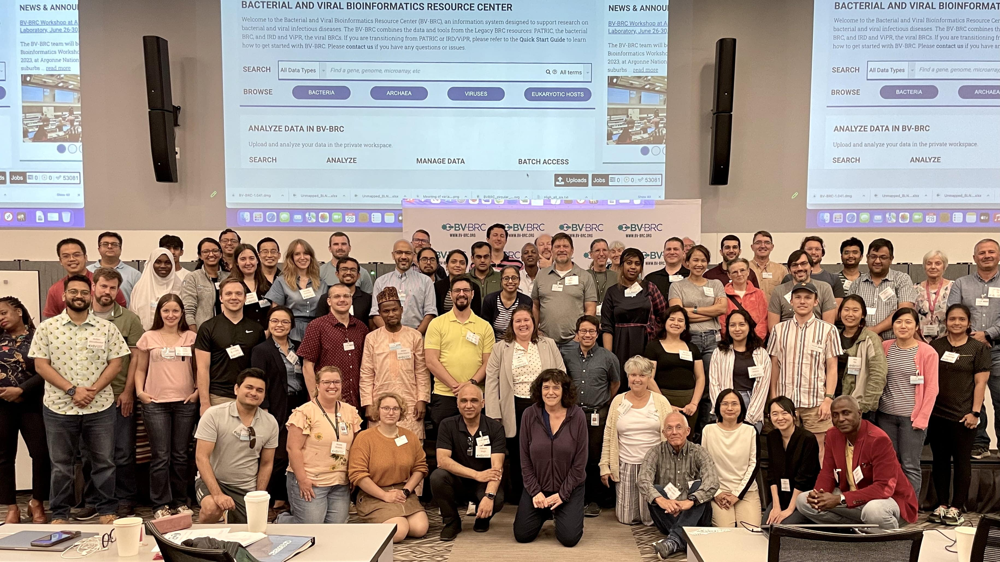

BV-BRC Bioinformatics Workshops – 2026¶
{kind=link}

The BV-BRC (Bacterial and Viral Bioinformatics Resource Center) team is excited to announce two upcoming Bioinformatics Workshops in 2025. Each workshop will show researchers how to analyze and explore bacterial and viral pathogen data using the BV-BRC website and command-line tools, with hands-on examples across bacterial and viral workflows.
Both workshops include two separate components—a bacterial track and a viral track—and participants may register for one or both. Each event also includes time for command-line training and opportunities to try out our AI Copilot.
Registration is closed for both workshops.
Workshop 1: J. Craig Venter Institute (JCVI)¶
Register Here: Registration is now closed
Dates: March 2–6, 2026 Location: La Jolla, California (San Diego County)
Workshop Structure¶
Bacterial Component March 2 (Monday) – March 3 (Tuesday) Focus:
Antimicrobial resistance data
Genomic and comparative analyses
Metagenomics
Transcriptomics
Command-Line & Integration Session March 4 (Wednesday) Focus:
Command-line interface
Programmatic data search, retrieval, and job submission
Testing the new AI Copilot
Viral Component March 5 (Thursday) – March 6 (Friday) Focus:
Data search
Phylogenetics
Comparative genomics
Assembly and annotation
Subspecies classification
Protein structure
Surveillance data
SFVT data
Transcriptomics
Includes hands-on docking service exercises
Location¶
Room 306 J. Craig Venter Institute 4120 Capricorn Lane La Jolla, CA 92037
Workshop 2: Chicago / Argonne National Laboratory¶
Register Here: Registration is now closed.
Dates: June 1–5, 2026 Location: Lemont, Illinois (Chicago area)
Workshop Structure¶
Bacterial Component June 1 (Monday) – June 2 (Tuesday) Focus: - Antimicrobial resistance exploration - Genomic and comparative genomics - Metagenomic and transcriptomic workflows
Command-Line and AI Copilot Session June 3 (Wednesday) Focus:
Command-line interface
Programmatic data search, retrieval, and job submission
Testing out the new AI Copilot
Viral Component June 4 (Thursday) – June 5 (Friday) Focus:
Phylogenetics
Comparative genomics
Sequence assembly and annotation
Subspecies classification
Surveillance exploration
Protein structure
SFVT data
Transcriptomics
Includes hands-on docking service exercises
Location¶
Building 240 Conference Center – Room 1416 Argonne National Laboratory 9700 Cass Avenue Lemont, IL 60439
FAQ¶
Is there a fee for registration? No. Registration is completely free. Travel and meals are arranged by attendees on their own.
Does my registration confirm my participation? No. Once you apply, we will confirm your attendance by email.
Do I need prior bioinformatics experience? No prior experience is required.
Will I need to bring my own computer? Yes, please bring your own laptop.
Are hotel room blocks available? Room block information is being finalized. This page will be updated once confirmed.
Do I need to bring my own data? No; all workshop examples use publicly available datasets. However, if you have questions about your own data, the BV-BRC team can help you explore how to analyze it.
Are scholarships available? BV-BRC does not offer travel scholarships. However, external opportunities include:
https://www.biologists.com/grants/dmm-conference-travel-grants/
Many universities offer graduate student travel support.